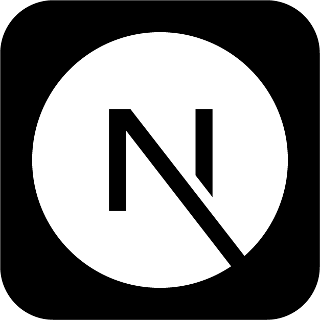
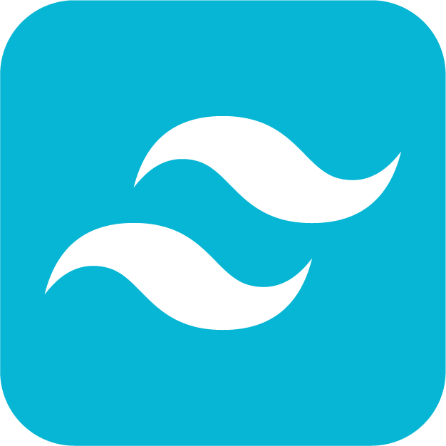
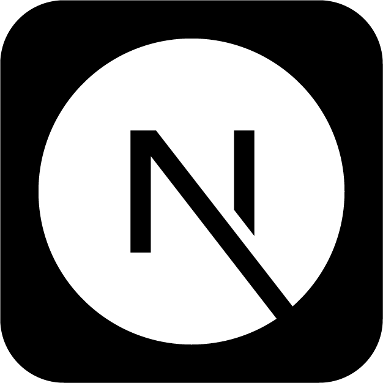
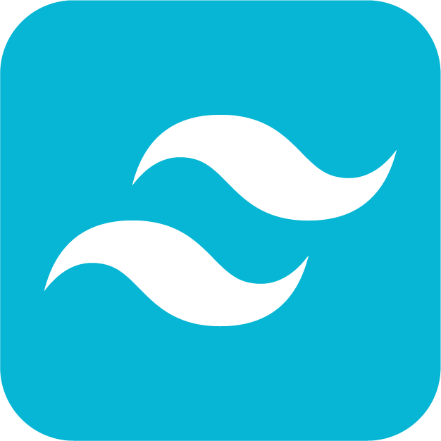

アイデア売買アプリ「Open Idea」
- 制作体制チーム製作(4人)
- 担当
UI/UXデザイン、ロゴ制作、プロトタイプ設計、メニューバー、発表スライド作成
- 制作期間2025年 11月(１週間)
- 使用ツール


 

プロダクト概要
アイデアに価値をつけて売買できるWebアプリ。 ユーザーはアイデアを「無料部分」と「有料部分」に分けて投稿することができ、他のユーザーがアイデアを購入できます。
目的
アイデアそのものに価値を与え、創造的な発想を可視化・流通させることで、「思いつき」を評価できる場をつくることを目的としています。
ポイント
スマホファーストのUI設計
主な利用シーンをスマートフォンと想定し、片手操作でも迷わず使えるようにボタン配置・サイズ・導線を設計しました。特に画面下部に主要アクションを集約し、視線移動と指の移動距離を最小限に抑えています。
アイデアの“ひらめき”を表現したビジュアル設計
サービスのコンセプトに合わせて電球モチーフのロゴを制作し、全体の配色やアイコンにも「明るさ・軽やかさ・前向きさ」を感じられるトーンを採用しました。SNSらしいシンプルで親しみやすく、長時間見ても疲れにくいUIを意識しています。
学んだこと
完成形を一つだけ出すのではなく、あえて複数の方向性の案を提示することで、メンバーが感覚的な意見だけでなく、理由を伴ったフィードバックをしやすくなると学びました。結果として、デザインを“個人の好み”ではなく、チーム全体の意思として決めていくプロセスを作ることができました。